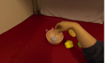
Human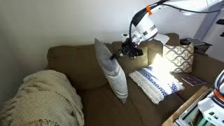
Robot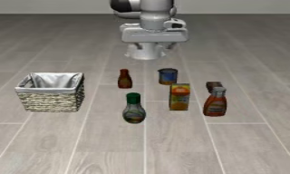
Simulation01 · Overview
Robotic experience is abundant, but the useful context is not simply a visually similar frame. It is an interaction whose future matches what the robot is doing now.

Human
Robot
Simulation“Pick up the bbq sauce and place it in the basket.”Recorded LIBERO instructionLanguage
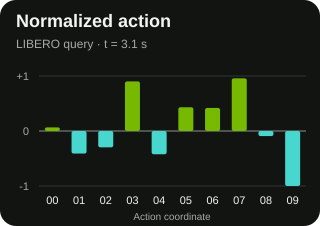
Native action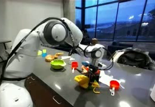
DROID reference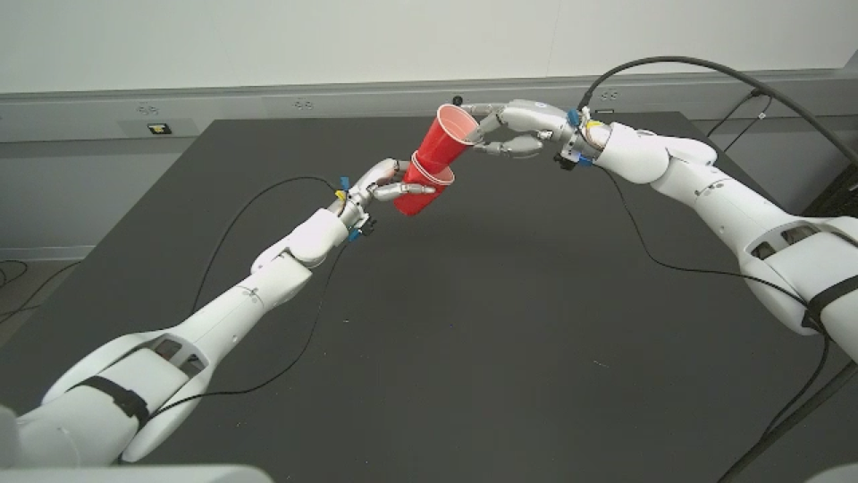
Real-robot execution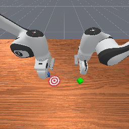
Two-Robot Stack · start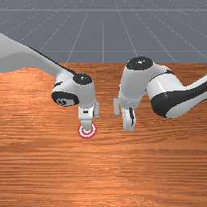
Recorded executionEncode the current interaction crop or frame, instruction, and native action.
Search a shared gallery for experience whose continuation fits the current interaction.
Use retrieved experience as policy context, or grow task-local memory across attempts.
02 · Robota-Embed
Robota-Embed represents a current interaction and a recorded future continuation with normalized embeddings, while retaining each data source's native action interface.
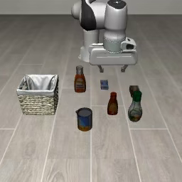
Original frame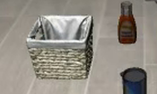
Robota-Embed crop“Pick up the bbq sauce and place it in the basket.”Recorded action values ↗
Match a current interaction state to a future continuation rather than pairing static views of the same instant.
Treat native actions as retrieval evidence alongside vision and language, preserving what the robot is physically doing.
Map source-specific action formats through dedicated projectors into one normalized embedding space.
 Current frame→
Current frame→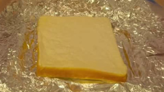
SAM3 crop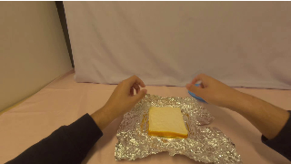
…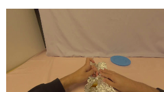
Future video · 16 frames / 4 s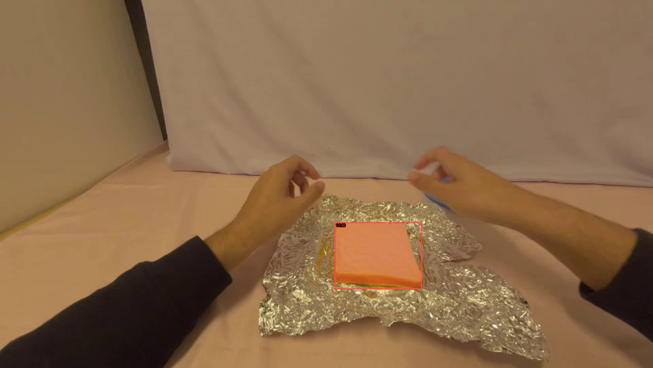
Task phrase → SAM3 320 × 192 crop
320 × 192 crop03 · Robota-Embed-Bench
Robota-Embed-Bench combines human, simulated, and real-robot experience while preserving a single retrieval protocol.
Robota-Embed-Bench
The evaluation contains 3,200 source-scoped query episodes and an 8,000-window gallery manifest. Exact clip positives and episode-level alternatives are evaluated separately.
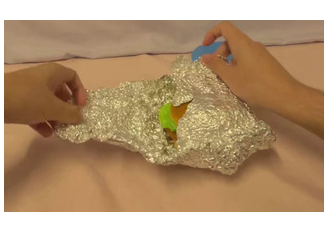
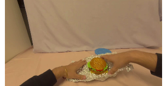
Unwrap a chickenburger from foil
V / L / embodiment-native action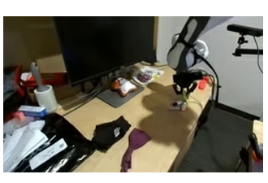
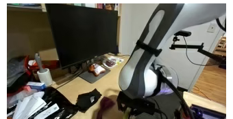
Move the maroon cloth to the left
V / L / embodiment-native action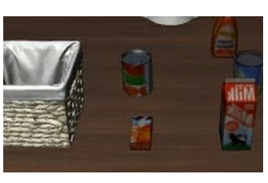
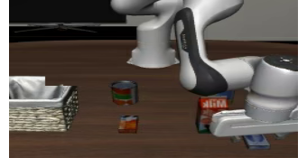
Put cream cheese and butter in the basket
V / L / embodiment-native action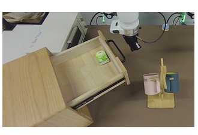
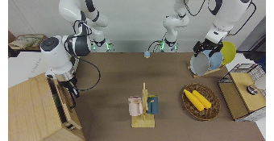
Close the drawer with the right arm
V / L / embodiment-native actionFour final-checkpoint examples: a shared success, a temporal near-miss, a hard distractor, and an identity failure.
Selected qualitative examples, not an estimate of benchmark accuracy. All four queries are in the benchmark test partition; the gallery includes mixed source splits. No reranking.
Gemini and Omni receive the original current image and instruction. Robota-Embed receives the recorded SAM3 crop, instruction, and synchronized native action. Each video visualizes 16 selected future frames over four seconds; it is not a native-frame-rate recording. Playback aligns clip-relative time, not absolute timestamps across episodes.
“Paired clip rank” is the rank of the exact recorded future associated with the query. A different window from the same episode counts as an episode hit, but not an exact clip hit. Scores from different embedding models are not compared.
04 · Embed2ICL
Embed2ICL turns retrieved physical experience into the native conditioning interface of training-free and training-based robot policies.
Embedding-guided in-context learning
A training-free path initializes DreamZero's visual cache with a selected reference. A training-based path conditions Fast-WAM on cached Context Tokens from the retrieved demonstration.
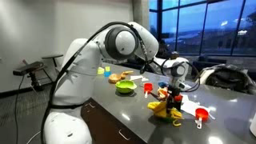
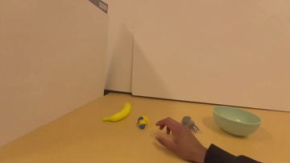
Top-1Retrieved experience and selected Fast-WAM archive rollouts, grouped by task and episode index.
Same-index archive examples; initial states are not certified identical. The reported progress means come from the 12-rollout evaluation, not these selected clips.
Same-index archive examples, with no-ICL trial 1 shown. Initial states are not certified identical; the reported means use the full 12-rollout evaluation.
Both evaluation conditions share the same YAM-adapted DreamZero policy. Progress is cumulative stage credit on a 0–100 scale; binary success rises separately from 0.0% to 16.7%. Results use 12 trials per condition. These full-length reference and execution clips are selected qualitative examples, not a paired baseline comparison or an estimate of success frequency.
Retrieved reference, official-release rollout, and Embed2ICL prefilling rollout.
Explore reference-conditioned rollouts across three simulation tasks.
Reference-conditioned rollouts
Compare no-warm-up and retrieved-reference rollouts across three DROID-Sim tasks, with synchronized playback of the external and wrist cameras.
Success → SuccessBaseline / with reference
Query and reference
Inspect the four-second reference alongside the two rollouts to compare the cube’s motion and its placement relative to the bowl.
The displayed reference is one view of the four-second clip. The policy received three synchronized views.Failure → FailureBaseline / with reference
Query and reference
The task asks for a can in a mug; the retrieved instruction describes a pen in a cup.
The displayed reference is one view of the four-second clip. The policy received three synchronized views.Success → SuccessBaseline / with reference
Query and reference
The reference describes placing a banana in a box. The simulation task uses a bin; both displayed rollouts end successfully.
The displayed reference is one view of the four-second clip. The policy received three synchronized views.Swipe across each rollout to inspect all three camera views.
Selected qualitative rollouts with the same scene, seed 0, and camera layout. Playback aligns video time; terminal outcomes are shown for each clip. These examples are not used to estimate success rates.
05 · Embed2Evolve
Embed2Evolve grows task-local context from experience and execution feedback, then freezes the selected harness for testing while GPT and embedding weights remain fixed.
Embedding-guided context evolution
Each completed attempt becomes retrievable context. The context harness evolves how the policy accesses that memory; it does not evolve policy weights. The selected harness improves final task success while reducing test-time policy context.
Five ManiSkill tasks with 20 fresh matched initializations per task and condition.
Means include successful and failed test rollouts; development rollouts are excluded.
Success and token results use all final test rollouts, including failures. Decision and time results use only shared-success pairs and are reported separately.
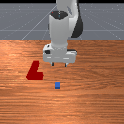

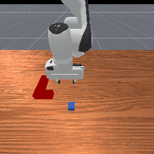
RGBTextAction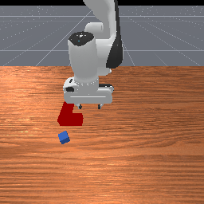
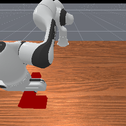
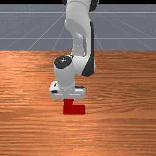
Seed 40 is used for every task and condition, selected before observing outcomes.
Task rates aggregate test seeds 40–59. The displayed videos use the same predeclared seed 40 regardless of whether a method succeeds; the random-history videos are the corrected RGB-only condition, and playback duration is not wall-clock execution time.
Technical report
Robota-Embed unifies vision, language, and native action for predictive experience retrieval, then applies the same representation to robot in-context learning and context evolution.
The complete report, with methods, evaluation, and supplementary analysis.
Download PDF ↗Research code release is pending. The project website source is available in yunzeliu/robota-embed.
Download links will be added when the artifacts are released.
The citation entry will be added once the public paper record is available.